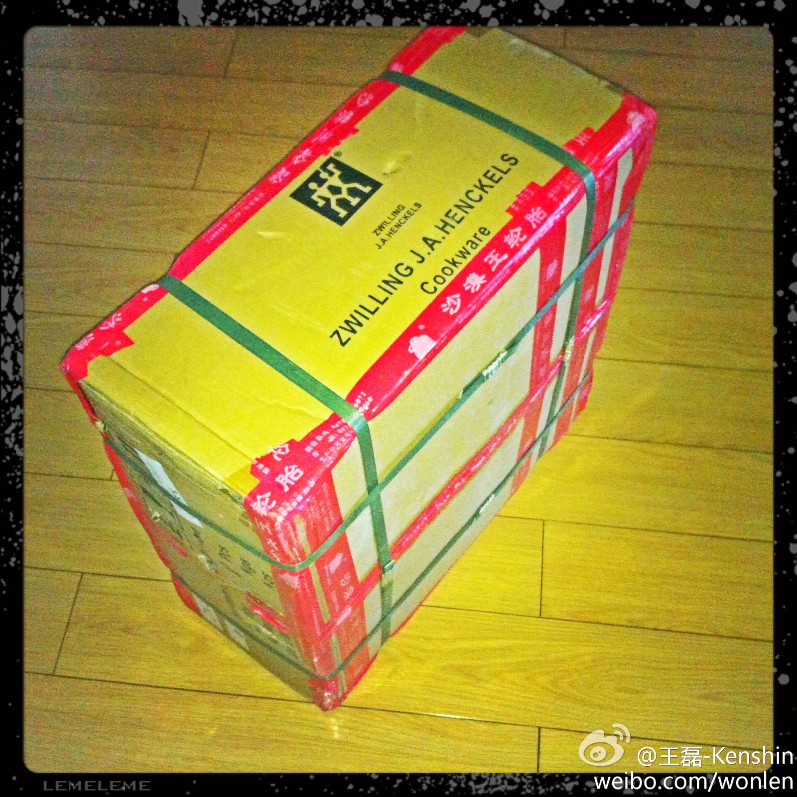
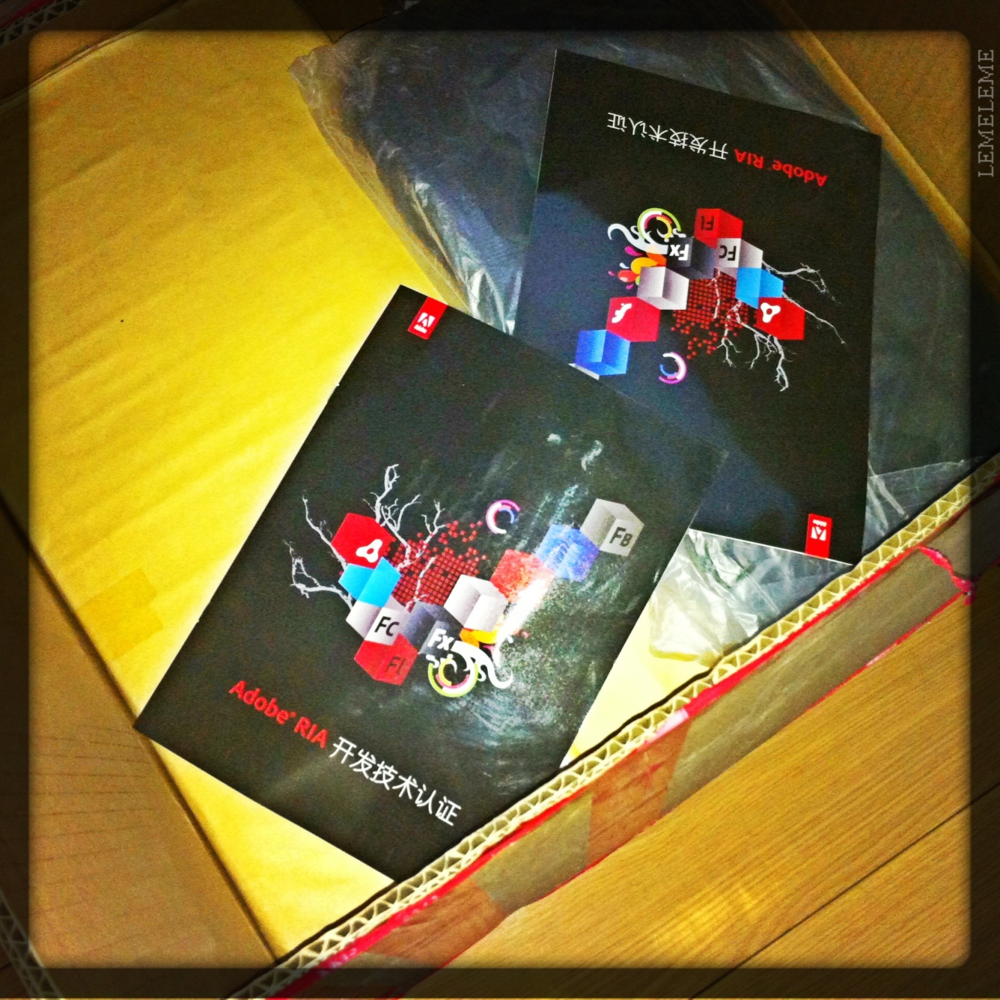

一般对加粉丝的那类,我都是踢出去,然后拉黑. 开始还举报,后来嫌麻烦就不举报了,别骚扰我就行.@lijianchina:最近加我的粉丝分三种：1.我认识的朋友，这类属于我想要分享的人；2.一个丝毫没有创新性的头像，写着刷粉 加V 先刷后付款 然后就是一个QQ号，大家都是一样的头像，只是qq号不同，关键这种也有粉丝。3. 那种很少写微博或者只是转别人微博的，这种一般都是关注了五百到一千个人的。有意思吗？没意思。
确实是啊, 只能看到50页, 50*20=1000个follower. 以前没注意到.@lijianchina:发现了新浪微博的一个特点，当你在姚晨的主页里面点击姚晨1千万粉丝数的时候，你只能看到每页20个一共50页的粉丝。也就是当你拥有超过1000个粉丝的时候，再多一个粉丝就会顶出一个以前的粉丝。不知道姚晨是不是能够看到实际的数量，还是一样只能看到50页。向拥有一千以上粉丝的@Ada李力 求证：）
Adobe对开发者这么大方? 双立人的东西? 羡慕嫉妒恨. //@Mark_董龙飞：邮给你的1000万人民币就不要上图了，要低调//@王磊-Kenshin:回复@不可思议的凡:各种礼品，稍后上“解剖”图... //@不可思议的凡:里面是神马？@王磊-Kenshin:哈哈，Adobe邮寄给我的东西到了，一个大箱子，感谢@fiona_duan ，这下群友有福喽 
这包袱抖得, 像说书一样. //@fiona_duan：讲解工作真是细致，图文并茂啊[呵呵] 。//@王磊-Kenshin：上回书说道，各路同仁纷纷猜测那个大包是什么？答案揭晓了.... 说实话，我最开始也以为是双立人[风扇] @fiona_duan @不可思议的凡 @K-罗 @李佳宸-JCLee @Nshen @Ada李力 @northwolf北朗@王磊-Kenshin:Adobe 靠谱的礼物(图片6张) 网页链接 